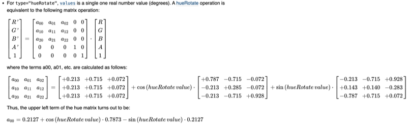
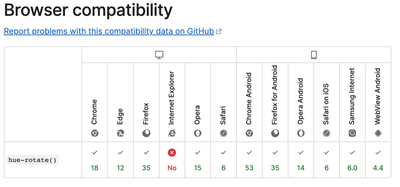

I am currently doing a thing for work (NDAs, business secrets, shhh) where I have to rewrite somebody else’s old project. The project involves processing images before they get fed into some machine learning model. I don’t know much about image processing, so that’s fun! It also, as it turns out, does some of this image processing in CSS. Oh yes it does - you know, that famous image processing framework, CSS! Yeah that one, the stylesheets! I am a CSS programmer now. I am a full stack CSS developer.
The naive might imagine this a simple task: there are, after all, significantly more powerful and numerous image libraries for Python. And I know enough about images to know that they are actually just a long list of pixels, and a pixel is just a 3-tuple of Red, Green and Blue values - that’s the RGB model. Approximating a hue-rotation should be trivial - surely you could simply take your regular old RGB image and convert it into one of the hue-specifying formats, let’s say HSV (Hue, Saturation, Value), then isolate the hue channel, adjust it, and recompose.
import numpy as np
from PIL import Image
img = Image.open(...)
hsv = img.convert("HSV")
H, S, V = hsv.split()
H += ... # <something_or_other>
return Image.fromarray(np.array([H, S, V]))
And in a saner world, yes, this would make absolute sense. It should work this way. It even could, for any other use-case, perform a perfectly suitable hue-rotation. But sanity is not one of the project requirements: my job is to precisely reimplement the CSS function hue-rotate, and CSS does not work the sane way. CSS is far too clever for that.
It took me far too long to find out how CSS image filters work. I was wary of getting muddled with the conversion between RGB and HSV modes, but on that front there was good news! It turns out that CSS skips the mode conversion step altogether! It does it right in the RGB space! Awesome!
And how does it control for the other channels? Because obviously, I imagined, if you just twiddle the RGB values then you’re not just changing the hue, you’re also changing the saturation and brightness and whatever. If your Victoria sponge has too much cream, you can’t reduce it by just taking a slice of cake. Yes, the amount of cream would go down in the remaining cake, but so would the other layers, so the proportion of cream would remain the same. The birds-eye-view slices-of-cake space encodes all the layers; you need to convert to the profile-view of the cake, where you can see the layers of sponge and jam and cream individually.
CSS achieves this impossible feat by - to extend the metaphor - taking a weird-shaped slice that starts off thin in the sponge layer and then spreads out thick in the cream layer. It is the kind of nonsense gymnastic feat of mathematics that would only be attempted by a madman. Or perhaps somebody trying to hack a decades-old technology to emulate modern features that it was never intended to be capable of, but now that technology has become so established in global data infrastructure that to replace it would be unthinkably complex, so we all have to go the scenic route. CSS is a load-bearing component of the Internet - we can’t take it out.
Obviously the results of the crazy-slice technique are different from the more straightforward hue rotation that Photoshop or a regular imaging library might produce. But therein lies my very issue: this project must exactly replicate the CSS behaviour. No dime-a-dozen run-of-the-mill hue rotation for me. Doing it the easy way is off the cards. Onwards I must, deeper into the heart of darkness.
Fortunately, there is a publicly documented generic algorithm that computes the weird-shaped slice of RGB cake in your pixel matrix sponge cake. The Web Consortium publishes its instructions here.
Unfortunately, the instructions are written in scary, arcane mathematical hieroglyphics that only wizards can read. Look at this gibberish:

Completely unintelligible.
Again we are in luck, however, because a friendly wizard left some breadcrumbs for us in a Stack Overflow answer (although some of those coefficients look a little different to the documented ones, so I suspect that this person might have reverse-engineered their solution somehow). So I just pulled out the old ctrl+c, ctrl+v and took out the semicolons and vars everywhere and it’s basically python. Haha Javascript, you so silly!
So in summary, yes, I successfully rewrote a roundabout hack that nobody will ever need except for me, this one time, for absolutely baffling reasons that I will probably not be able to explain in a few days when I’ve forgotten all about this. And the moral of the story is yet again: google it and copy someone else’s code from Stack Overflow.
It’s still wild to me that all Internet browsers have this insane vector multiplication thing going on underneath, just in case somebody wants to put some wacky colour filters on their web page but doesn’t want to learn jQuery.
Well … actually not all browsers.

Also every time I saw RGB my brain said "Ruth Gader Binsberg" which is quite funny.